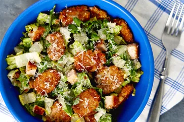

Crispy Tater Caesar Salad

Description
This crispy tater Caesar salad is for you if you love fries in a salad.
Crispy smashed tater tot croutons, a doctored-up bottled Caesar dressing,
and crispy chicken cutlets join Romaine lettuce and Parmesan in this meal in a bowl.
Ingredients:
- 8 ounces frozen crispy chicken cutlets
- 1 cup Caesar dressing
- 1 teaspoon fresh lemon zest
- 1 tablespoon white balsamic vinegar
Steps:
- Preheat the oven to 425 degrees F (220 degrees C)
- Set 2 shelves near the center of the oven
- Spray a baking pan with cooking spray
- place frozen chicken filets on the pan
return to first page